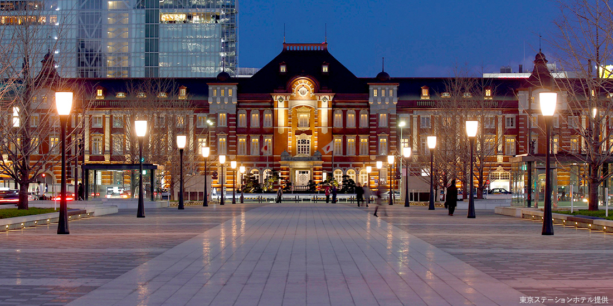
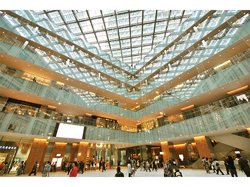

English
English
 简体中文
简体中文
東京駅、皇居
東京駅はMUST見に行くスポットです。東京駅は新幹線の出発駅ですので、大きな駅です。駅周辺は綺麗な光景です。現代の高層ビルと緑あふれる自然が融合した場所です。
15分程度歩くと、広い皇居に着きます。
東京駅
東京駅は1914年12月に開業した、100年以上の歴史があります。日本近代建築の父・辰野金吾が手掛けた「東京駅 赤レンガ駅舎」、南北約335ｍにわたって羽を広げるようにして建っており、一周歩くと、綺麗なオフイスビルと商業施設が見られます。
東京駅周辺
東京駅は綺麗な道があります。いい写真が撮れます。丸の内仲通りは、その中のメインストリート。石畳の舗道と街路樹が美しく、通り沿いには高級ブランド店やカフェなどが軒を連ねます。アートなオブジェなども多いので、まるで外国を歩いているような気分になれるかもしれません。
ＫＩＴＴＥは、旧東京中央郵便局舍を一部保存・再生し建築した商業施設です。
買い物しなくても、入る価値があります。中に展示物が無料で見られます。日本郵便と東京大学総合研究博物館が協働で運営し、東京大学が開学以来約140年の間に蓄積してきた学術標本や研究資料を中心に展示がされています。
6階にある屋上庭園「ＫＩＴＴＥガーデン」は緑が豊かで、丸の内エリアきってのビュースポットです。


和田倉噴水公園
東京駅の丸の内中央口から皇居方向に7分程度歩くと、和田倉噴水公園があります。1995年に皇太子殿下と皇太子妃殿下のご成婚を記念して整備された大噴水は必見です。その他にも水を使ったモニュメントや、上皇陛下の御製碑などがあります。夜はライトアップも行われ、昼とは違う幻想的な表情を見せてくれるので必見。

皇居外苑
東京駅から行幸通りを通って15分のところにある「皇居外苑」。大きな公園になっている松の点在する大芝生広場が見られます。 江戸城のたたずまいを残す濠、「桜田門」をはじめとする城門や皇居のシンボルである二重橋、楠木正成の銅像などの歴史的建造物があります。


皇居一般参観コース
皇居は普通に観光しても楽しいですが、内部までじっくり見たいなら「皇居一般参観コース」に参加するのもおすすめです。
【スポット詳細】
名称：皇居参観
集合場所：皇居 桔梗門
定員：【当日受付】各回300人（先着順、各整理券を配布）
【事前申請】各回200人
※18歳未満の方は成年者の同伴が必要。中学生以上の方で学校等からの申請があれば、9名以内で参観が可能。
時間：【午前の回】
9:00～ 整理券配布
9:30～ 受付開始
10:00～ 参観開始
11:15頃 参観終了
【午後の回】
12:30～ 整理券配布
13:00～ 受付開始
13:30～ 参観開始
14:45頃 参観終了
※持ち物：本人の確認ができるもの（運転免許証・マイナンバーカード・パスポート・在留カード・健康保険証など）を必ず持参してください（※コピー不可）
※当日受付の場合：本人確認ができるものを持参し、皇居桔梗門前に集合。参観開始時刻1時間前から整理券配布。入門後、参観申込書に記入。
※事前申請の場合：参観案内ホームページ内の「参観申込」から申込。参観希望日の前月1日5:00から、希望日4日前までに申請手続きを完了すること。
公式サイト：https://www.kunaicho.go.jp/event/sankan/sankaninfo.html
当日は 桔梗門 に参観整理券をもらいましょう。普段は通れない門なのですが、皇居一般参観コースの方はこちらから中に入れます。

最初は桔梗門の脇にある通りを進みます。曲がった道のあたりに、小さなお城のような建物を発見！こちらは江戸時代の江戸城本丸の南隅に建てられた富士見櫓です。

新年一般参賀や天皇誕生日一般参賀の際には、天皇皇后両陛下のお手を振る姿がテレビなどに映し出されたのを観たことはないでしょうか。その場所こそがこちらの「宮殿東庭（きゅうでんとうてい）」。この一般参賀の日には、誰もが皇居正門を通って、この場所から両陛下のお姿を見られるのです。この広場には、なんと1度に2万人が入れるそうですよ。